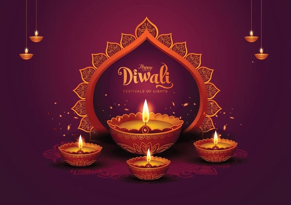
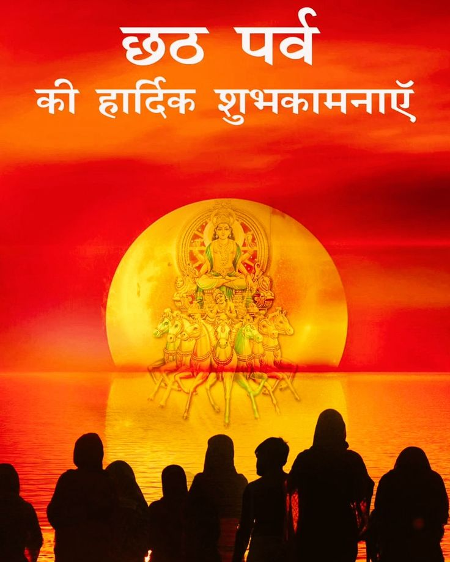
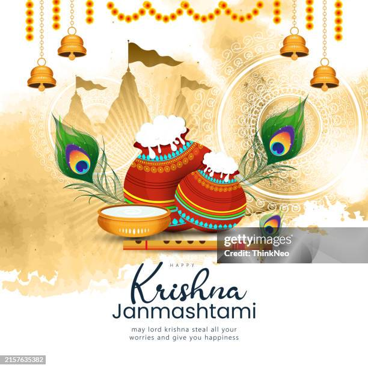

Diwali
Diwali is celebrated to mark the triumph of good over evil ✨ and the return of Lord Rama 🏹 to Ayodhya 🏰 after defeating the demon king Ravana 👹. This festival is observed on the Amavasya of the month of Kartika in the Hindu calendar, which typically falls in October or November. People celebrate by lighting lamps 🪔, decorating homes with lights and rangoli 🎇🎨, and celebrating with family and friends 👨👩👧👦❤️. It is a festival of lights and joy, symbolizing hope and prosperity 🌟🙏💰.
Holi

Holi is an ancient and joyful Hindu festival that symbolizes love, brotherhood, and the celebration of colors. 🌈 It’s a time to strengthen relationships and fill life with vibrant colors. On this day, people throw colors at each other, sing, dance, and forget past grievances, spreading messages of unity and love. 🤗 The main purpose of Holi is to celebrate the victory of good over evil and to foster social bonds. It is celebrated on the full moon day of the Phalguna month (February-March). 🌕 Holi is also closely associated with Holika Dahan, a tradition symbolizing the triumph of good over evil. On this day, people remember the story of Holika and Prahlad, where the victory of devotion and goodness over arrogance and evil is celebrated. 🔥 Holi is not just about colors, but a time to reconnect, forgive, and spread happiness. It’s a festival that brings people together, fills hearts with joy, and reminds us of the importance of love and peace. 💖🌟
Chhath Puja
🌞 What is Chhath Puja? Chhath Puja is an Indian festival mainly celebrated in Bihar and Eastern Uttar Pradesh. It is dedicated to Lord Surya (Sun God) and Chhathi Maiya. This festival is observed in the month of Kartik, six days after Diwali. 🌕✨ It is celebrated to seek blessings for children and the well-being and protection of the family. 👨👩👧👦💫 🙏 How is Chhath Puja Celebrated? Chhath Puja is a four-day festival: Nahay-Khay (Day 1) – Holy bath and preparing pure, home-cooked food 🍚🛁 Kharna (Day 2) – Fasting all day and offering jaggery kheer in the evening 🍲🌙 Sandhya Arghya (Day 3) – Offering water to the setting sun at the riverbank 🌇🌊 Usha Arghya (Day 4) – Offering prayers to the rising sun, ending the fast 🌅🌾
Janmashtami
🌟 Janmashtami – Celebration of Lord Krishna's Birth Janmashtami celebrates the birth of Lord Krishna, the eighth incarnation of Lord Vishnu. It is observed on the Ashtami (eighth day) of the Krishna Paksha in the Bhadrapada month (August-September). 🌙 ❓ Why is Janmashtami Celebrated? 👶 Birth of Lord Krishna: Krishna was born to protect dharma and signify the victory of good over evil. 🙏 Devotion and Faith: A day to express love and devotion to Lord Krishna. 🎉 How is Janmashtami Celebrated? 🍽️ Fasting: Devotees fast all day and break it at midnight when Krishna is believed to have been born. 🏠 Decorating Homes and Temples: Homes and temples are decorated with lights and flowers. 🛕 Worship and Bhajans: Lord Krishna is worshipped with prayers and bhajans. 🪅 Dahi Handi: In Gujarat and Maharashtra, Dahi Handi is celebrated by breaking a pot of curd.
Navratri
 🌸 Navratri – Festival of Goddess Durga
Navratri is a Hindu festival celebrating the divine feminine power, especially Goddess Durga, over nine nights during spring and autumn. It symbolizes the victory of good over evil and is marked by worship, fasting, and cultural events.
❓ Why is Navratri Celebrated?
🌺 To worship nine forms of Goddess Durga
⚔️ To celebrate her victory over demon Mahishasura
🙏 For spiritual cleansing and blessings
🎉 How is it Celebrated?
🛕 Daily worship of Durga's nine forms
🍽️ Fasting for nine days
💃 Garba and Dandiya Ras dances at night
📅 Nine Forms of Durga:
Shailaputri
Brahmacharini
Chandraghanta
Kushmanda
Skandamata
Katyayani
Kalaratri
Mahagauri
Siddhidatri
🌸 Navratri – Festival of Goddess Durga
Navratri is a Hindu festival celebrating the divine feminine power, especially Goddess Durga, over nine nights during spring and autumn. It symbolizes the victory of good over evil and is marked by worship, fasting, and cultural events.
❓ Why is Navratri Celebrated?
🌺 To worship nine forms of Goddess Durga
⚔️ To celebrate her victory over demon Mahishasura
🙏 For spiritual cleansing and blessings
🎉 How is it Celebrated?
🛕 Daily worship of Durga's nine forms
🍽️ Fasting for nine days
💃 Garba and Dandiya Ras dances at night
📅 Nine Forms of Durga:
Shailaputri
Brahmacharini
Chandraghanta
Kushmanda
Skandamata
Katyayani
Kalaratri
Mahagauri
Siddhidatri Makar Sankranti

🌞 Why is Makar Sankranti Celebrated? Makar Sankranti marks the day when the Sun enters the zodiac sign Capricorn (Makara). It symbolizes the end of winter and the beginning of longer, warmer days. It celebrates the Sun’s northward journey (Uttarayan). A time of harvest, positivity, and new beginnings. It honors Surya Dev (Sun God) and nature’s cycle. 📅 When is Makar Sankranti Celebrated? 🗓️ Makar Sankranti is celebrated every year on 14th January (sometimes on 15th January, depending on the solar calendar). It is one of the few Hindu festivals that follows a fixed date each year. 🎉 How is Makar Sankranti Celebrated? 🪁 Kite Flying: People fly colorful kites, especially in Gujarat and northern India. 🛕 Worship of the Sun: Devotees offer water and prayers to Surya Dev during sunrise. 🍬 Eating Sesame & Jaggery (Til-Gud): People share sweets made of til (sesame) and gur (jaggery), saying: “Til-gud lo, gud gud bolo!” (Take sesame-sweets, speak sweetly!) 🛁 Holy Bath & Charity: Taking a holy dip in rivers (like the Ganga) and giving charity is believed to bring blessings.
Mah Shivratri
 🔱 Why is Maha Shivratri Celebrated?
Maha Shivratri is a major Hindu festival dedicated to Lord Shiva, observed every year on the 14th night (Chaturdashi) of the waning moon in the month of Phalguna (February–March). It is celebrated for several reasons:
Marriage of Lord Shiva and Goddess Parvati
It is believed that on this night, Lord Shiva married Goddess Parvati. Hence, the day is celebrated as their divine wedding anniversary.
Appearance of Shiva as a Linga (Shivlinga)
According to another legend, Shiva appeared as a massive pillar of fire (linga form) to settle a dispute between Lord Brahma and Lord Vishnu over who was the greatest.
Churning of the Ocean (Samudra Manthan) and Shiva Drinking Poison
During the churning of the cosmic ocean, a deadly poison called Halahala emerged. To save the world, Shiva drank the poison, holding it in his throat, which turned blue. This act of sacrifice is commemorated on Maha Shivratri.
📅 When is Maha Shivratri Celebrated?
It is celebrated on the 14th day (Chaturdashi) of the dark fortnight (Krishna Paksha) in the Hindu month of Phalguna.
In the Gregorian calendar, it usually falls in February or March.
🙏 Why Should We Celebrate Maha Shivratri?
It is a spiritually significant night for meditation, self-purification, and connecting with divine consciousness.
Devotees observe fasts, stay awake all night (Jagran), chant mantras like "Om Namah Shivaya", and perform special prayers and offerings (abhishek) to Shivling.
It is believed to help one overcome ignorance, gain inner peace, and even attain moksha (liberation).
🔱 Why is Maha Shivratri Celebrated?
Maha Shivratri is a major Hindu festival dedicated to Lord Shiva, observed every year on the 14th night (Chaturdashi) of the waning moon in the month of Phalguna (February–March). It is celebrated for several reasons:
Marriage of Lord Shiva and Goddess Parvati
It is believed that on this night, Lord Shiva married Goddess Parvati. Hence, the day is celebrated as their divine wedding anniversary.
Appearance of Shiva as a Linga (Shivlinga)
According to another legend, Shiva appeared as a massive pillar of fire (linga form) to settle a dispute between Lord Brahma and Lord Vishnu over who was the greatest.
Churning of the Ocean (Samudra Manthan) and Shiva Drinking Poison
During the churning of the cosmic ocean, a deadly poison called Halahala emerged. To save the world, Shiva drank the poison, holding it in his throat, which turned blue. This act of sacrifice is commemorated on Maha Shivratri.
📅 When is Maha Shivratri Celebrated?
It is celebrated on the 14th day (Chaturdashi) of the dark fortnight (Krishna Paksha) in the Hindu month of Phalguna.
In the Gregorian calendar, it usually falls in February or March.
🙏 Why Should We Celebrate Maha Shivratri?
It is a spiritually significant night for meditation, self-purification, and connecting with divine consciousness.
Devotees observe fasts, stay awake all night (Jagran), chant mantras like "Om Namah Shivaya", and perform special prayers and offerings (abhishek) to Shivling.
It is believed to help one overcome ignorance, gain inner peace, and even attain moksha (liberation).